Expandí tu dominio
con un buen café
Café de especialidad, mangas y anime en pantalla. Tu refugio otaku para desconectar del mundo.
Tu café de especialidad,
como en el living de tu casa
En Mi Café Otaku creamos un espacio cálido, cuidado en cada detalle, para que te sientas como en casa
Rendimos homenaje a nuestros animes favoritos (¡desde Chainsaw Man hasta los clásicos de siempre!). Todo está pensado para que te relajes con buena luz natural, rodeado de mangas y mucha cultura otaku.
- Ambiente súper cálido y luminoso
- Biblioteca de mangas gratuita a disposición
- Café de especialidad con alma otaku
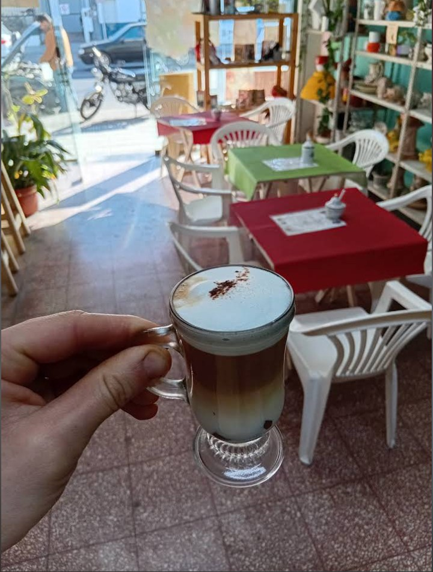
Lo que ofrecemos
Ven a desconectar del día a día de la mejor manera.
Tardes de Anime
Disfruta de nuestra pantalla donde a partir de las 18:30 transmitimos episodios clásicos o estrenos corriendo de fondo.
Lectura Tranquila
Agarra un volumen de tu anime o manga favorito de nuestra biblioteca y lee sin apuros.
Pastelería Casera
Cookies gigantes, budines y opciones dulces horneadas con el mismo cariño que le ponemos al café.
Servicio de mate
Podes venir y tomar mate, leer mangas, reír con amigos o solo, del modo que sea, siempre hay tiempo para darse un tiempo.
Nuestras Delicias
Acompaña tu lectura con nuestras opciones de pastelería y cafetería de especialidad.
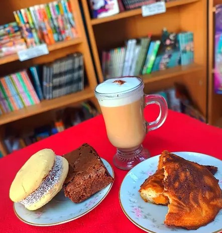
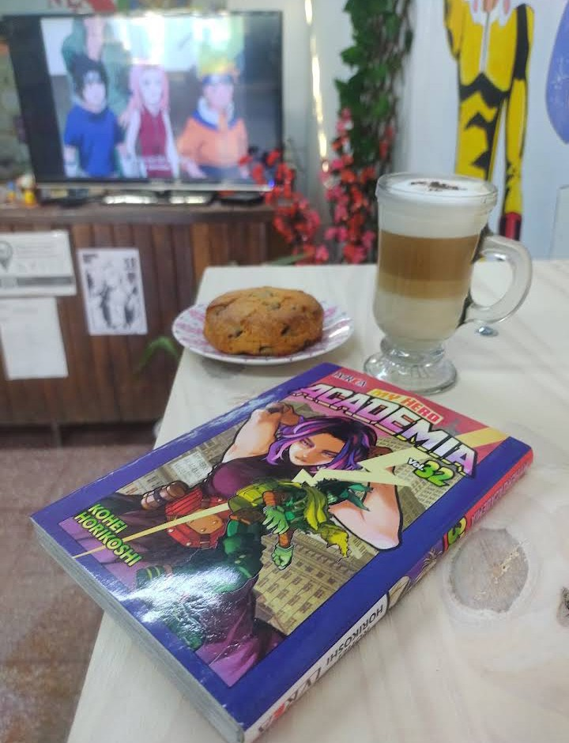
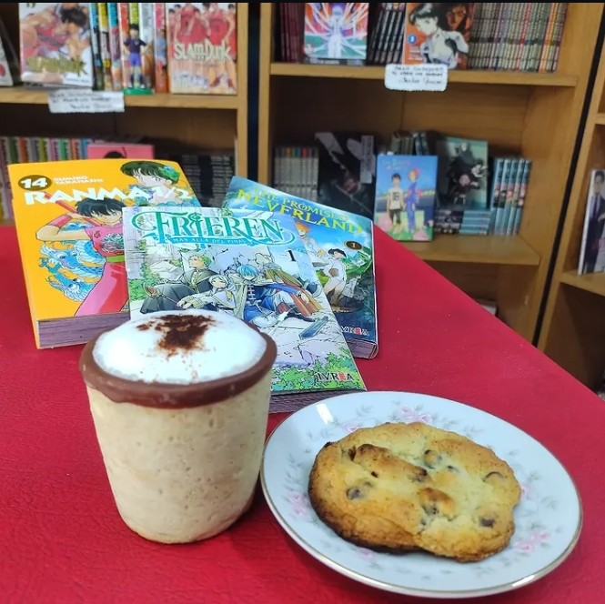
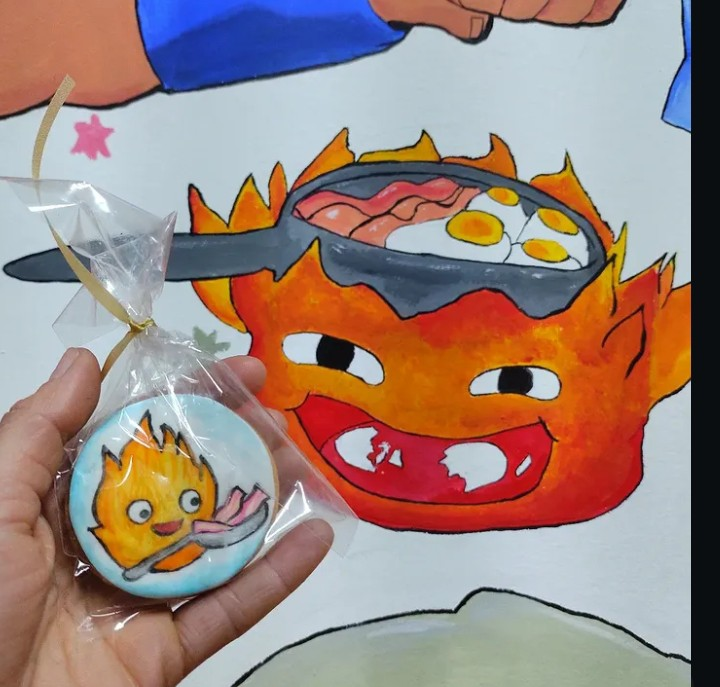
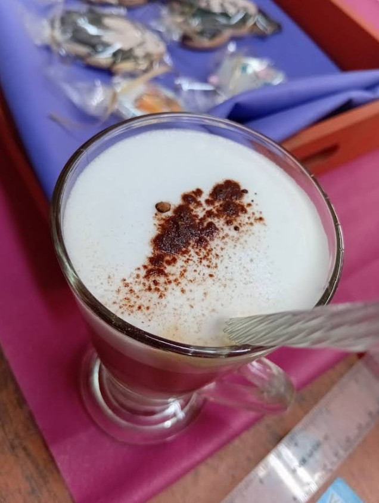
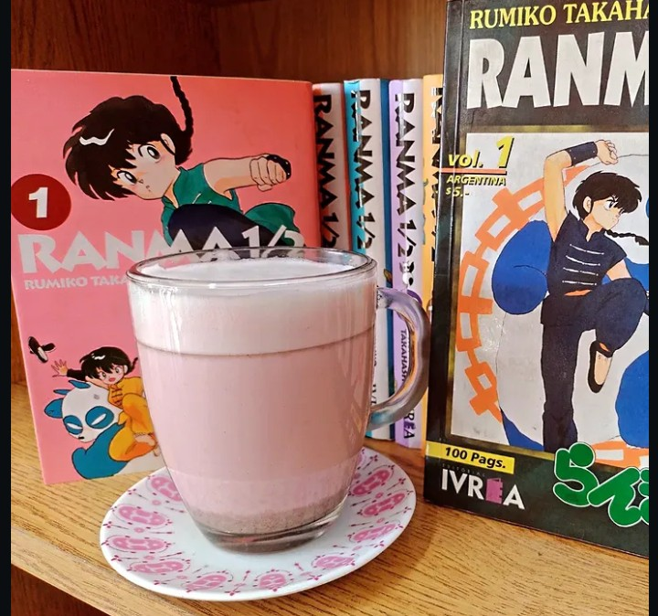
Nuestros Espacios
Conoce los rincones de nuestro local llenos de detalles de tus animes favoritos.
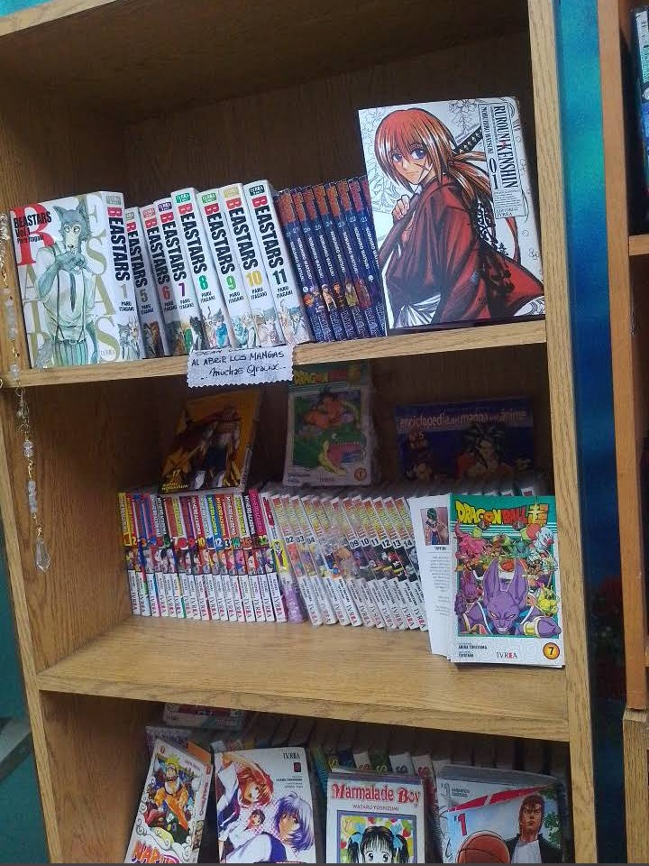
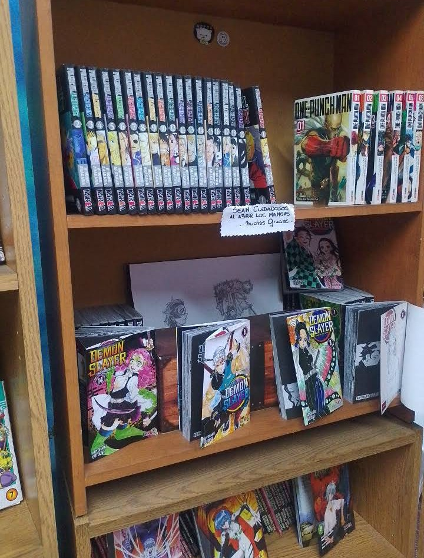
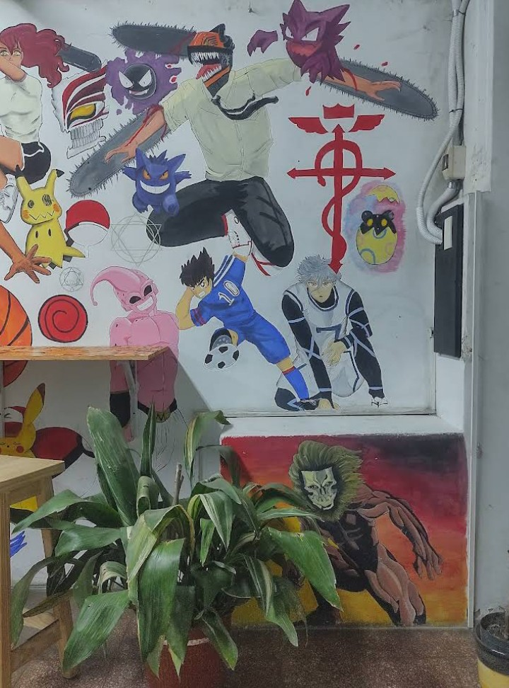
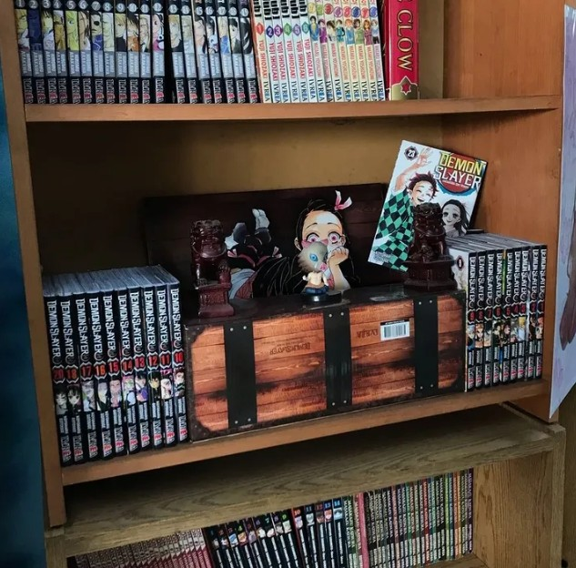
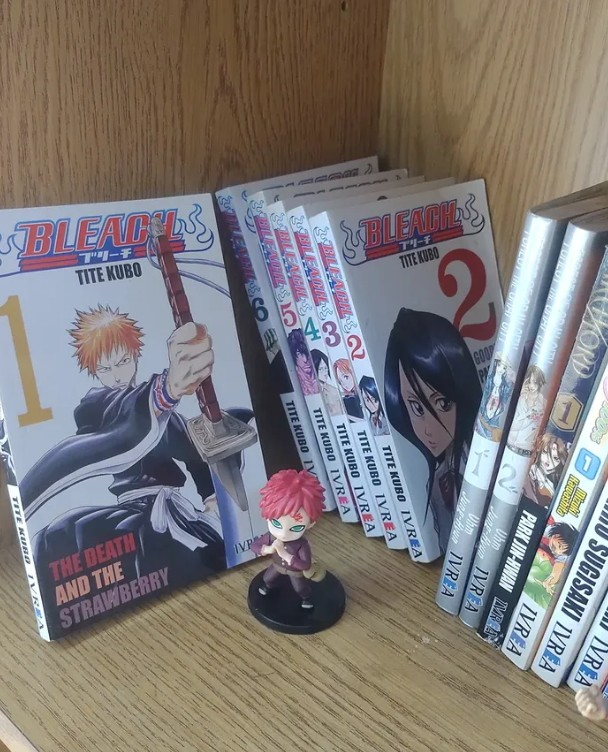
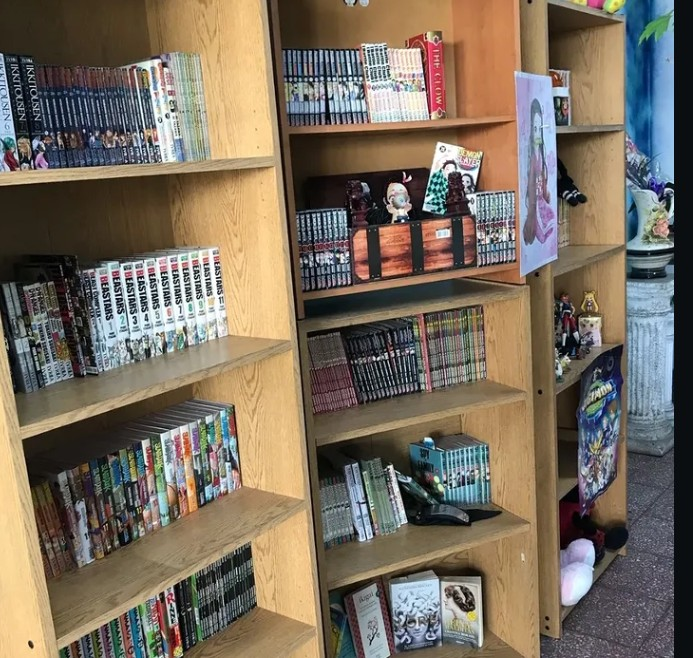
Nuestro Merch
Llevate un recuerdo de Mi Café Otaku a tu casa.
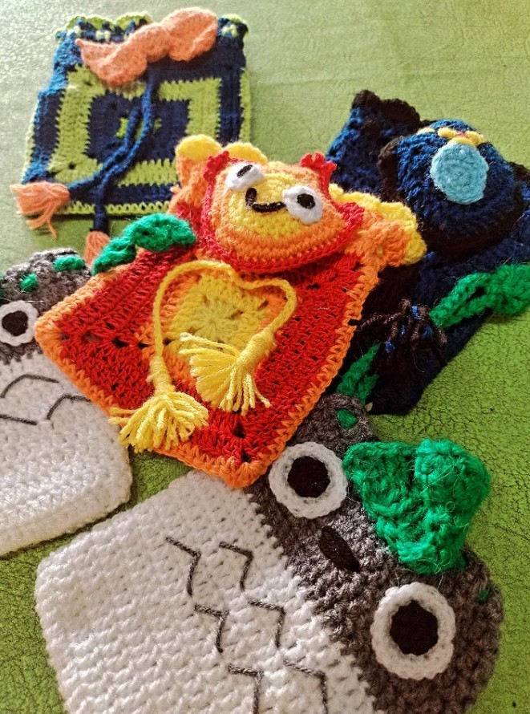
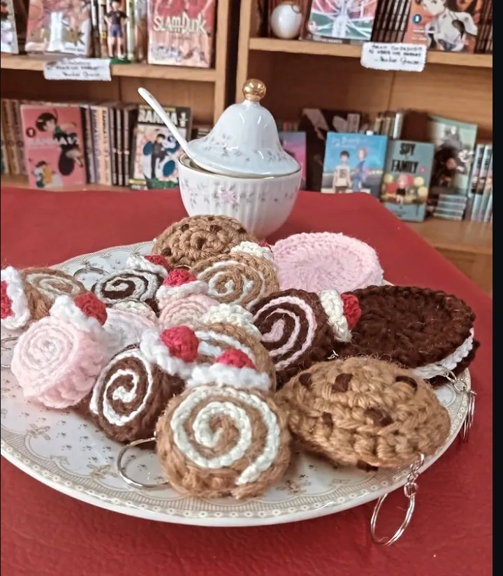
Vení a sentirte como en casa
¿Con ganas de pasar a visitarnos? Mandanos un mensaje para reservar tu mesa o consultar si tenemos ese manga que quieres leer.
Escribinos por WhatsAppUbicación
Av. Gdor. Vergara 2359, Hurlingham, GBA
Horarios
Mar a Dom: 16:00 - 22:00hs